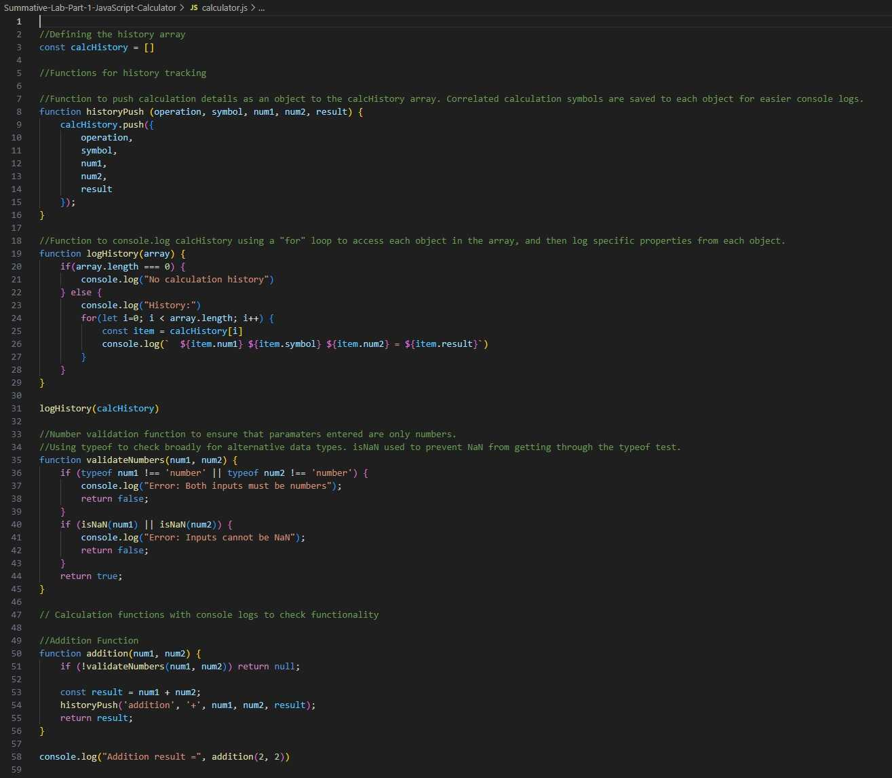

About Me
Porter Hakes is a dedicated software engineer with a unique background in business and client relations. He graduated summa cum laude from Arizona State University with a Bachelor's degree in Business Entrepreneurship and gained valuable professional experience as an Account Manager at Dan Hakes Farmers Insurance. Seeking to align his career with his passion for technology, Porter pursued software engineering education through Flatiron School in partnership with the University of Utah. His diverse experience has instilled in him the values of adaptability, perseverance, and strategic problem solving skills he applies to every project he undertakes. He is proud to be a husband and father.
Programming Languages
- Javascript
- HTML
- CSS
Projects
Javascript Calculator
A command-line calculator built with JavaScript to perform basic arithmetic (addition, subtraction, multiplication, division) and track calculation history. Built as a learning project to practice JavaScript fundamentals including functions, validation, data structures, and error handling.
CSS Responsive Layouts
A basic html page transformed into responsive cards using css styling.
Contact me:
- Phone: (888)-888-8888
- Email: pdhakes25@gmail.com
- LinkedIn: Porter Hakes